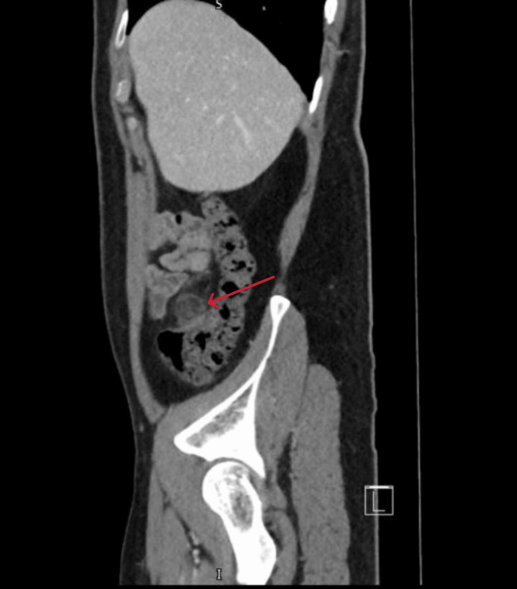

Ficha del catálogo
Apendagitis epiploica
- Sistema
- Digestivo
- Modalidad
- TC
- Región
- Grasa pericolónica
- Dificultad
- Intermedio
Es la inflamación e infarto de un apéndice epiploico, una de las pequeñas prolongaciones de grasa peritoneal que cuelgan de la superficie del colon. Se produce por torsión o por trombosis de su vena de drenaje. Provoca un dolor abdominal focal e intenso, a menudo sin fiebre ni leucocitosis, y es un cuadro autolimitado que se resuelve con tratamiento sintomático.
Técnica
La tomografía con medio de contraste intravenoso es el estudio que establece el diagnóstico, porque muestra con nitidez la densidad grasa de la lesión y su relación con la pared del colon. El ultrasonido puede identificarla en pacientes delgados como una masa ovoidea hiperecogénica no compresible en el punto exacto del dolor. La resonancia se reserva para casos dudosos o para evitar radiación.
Qué observar
- Lesión ovoidea de densidad grasa adyacente a la cara antimesentérica del colon, de aproximadamente 1.5 a 3.5 cm
- Anillo periférico hiperdenso que corresponde a la serosa inflamada
- Punto central hiperdenso que representa el vaso trombosado
- Trabeculación de la grasa limitada al entorno inmediato de la lesión
- Pared del colon adyacente conservada o solo mínimamente engrosada
- Correspondencia exacta entre la localización de la lesión y el punto de máximo dolor
Hallazgos
Se identifica una imagen ovalada de contenido graso pegada al borde del colon, con un halo denso periférico y un punto central de mayor atenuación, rodeada de una discreta reticulación de la grasa. La ausencia de engrosamiento significativo de la pared colónica y de divertículos inflamados es la clave que la separa de la diverticulitis. Con el tiempo la lesión puede reducirse, calcificarse o desprenderse y quedar como un cuerpo libre intraperitoneal calcificado, hallazgo casual sin trascendencia.
Perlas
El error más costoso es confundirla con una diverticulitis o con una apendicitis y llevar al paciente a quirófano o a un curso prolongado de antibiótico, cuando lo indicado es analgesia y observación. La regla práctica es que en la apendagitis la inflamación de la grasa es desproporcionadamente mayor que la de la pared del colon, mientras que en la diverticulitis ocurre lo contrario.
Diagnóstico diferencial
- Diverticulitis aguda
- Hay divertículos, engrosamiento de la pared colónica y la inflamación se centra en la pared, no en un nódulo graso.
- Infarto omental
- Masa grasa mayor, sin anillo hiperdenso definido, en el cuadrante inferior derecho entre el colon y la pared abdominal.
- Apendicitis aguda
- Apéndice dilatado con pared realzante y grasa periapendicular inflamada, con dolor en la fosa iliaca derecha.
- Implante peritoneal o metástasis
- Nódulo de partes blandas sin densidad grasa, en contexto oncológico y sin dolor focal agudo.
- Liposarcoma bien diferenciado
- Masa grasa de mayor tamaño, con septos gruesos y crecimiento progresivo en controles.
Simuladores
- Grasa perirrectal o pericolónica engrosada de forma difusa en la enfermedad inflamatoria crónica
- Apéndice epiploico normal proyectado junto a un asa, sin halo ni trabeculación
- Cuerpo libre intraperitoneal calcificado residual, hallazgo antiguo sin actividad
Por modalidad
- TC
- Es el método diagnóstico por excelencia gracias a la caracterización de la grasa y a la valoración de la pared colónica
- US
- En pacientes delgados muestra una lesión ovoide hiperecogénica no compresible y sin flujo en el punto doloroso
- RM
- Confirma el contenido graso con secuencias de supresión y evita radiación en pacientes jóvenes
Protocolo
Tomografía abdominopélvica con medio de contraste intravenoso en fase portal a los 60 a 70 segundos, con cortes finos y reconstrucciones coronales. El ultrasonido dirigido se hace con transductor lineal de alta frecuencia sobre el punto de dolor, aplicando compresión gradual y valorando el flujo con Doppler color.
Clasificación
Errores frecuentes
- Etiquetarla como diverticulitis y prescribir antibiótico y seguimiento innecesarios
- No correlacionar la localización de la lesión con el punto exacto del dolor
- Confundir el cuerpo libre calcificado residual con un cálculo o un cuerpo extraño

apendagitis epiploica grasa pericolonica dolor focal tomografia diverticulitis infarto omental autolimitado